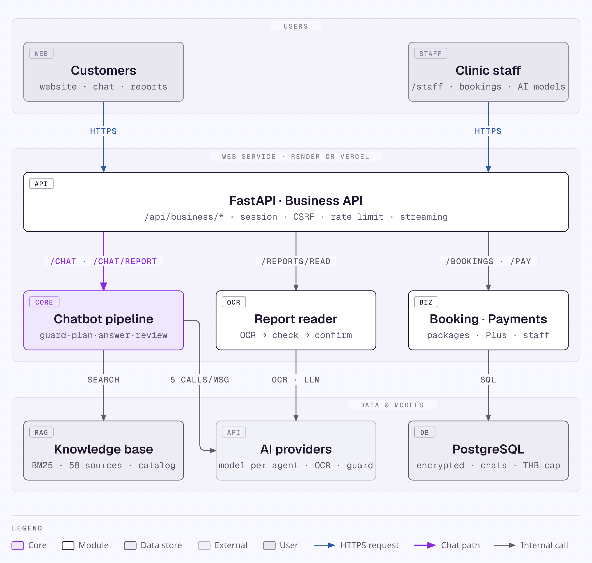
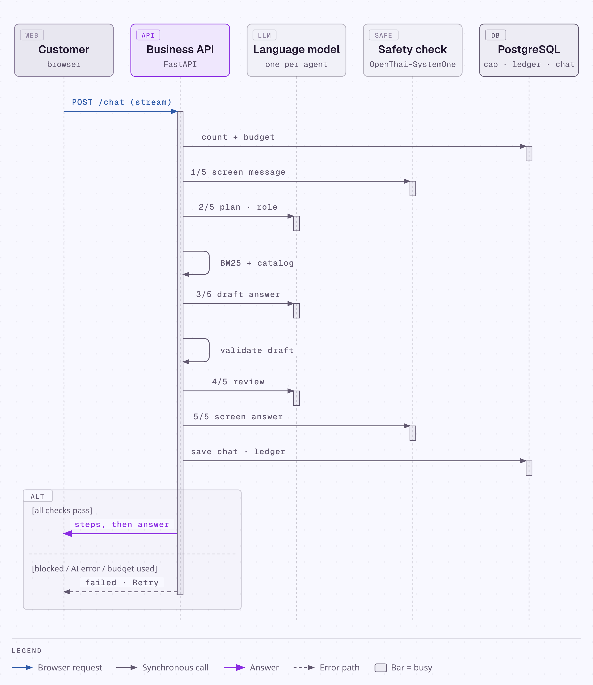
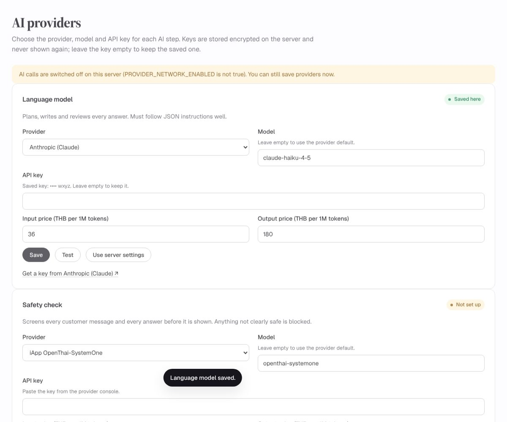
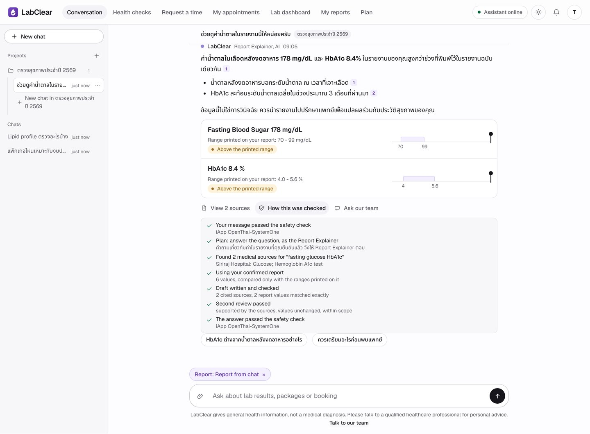
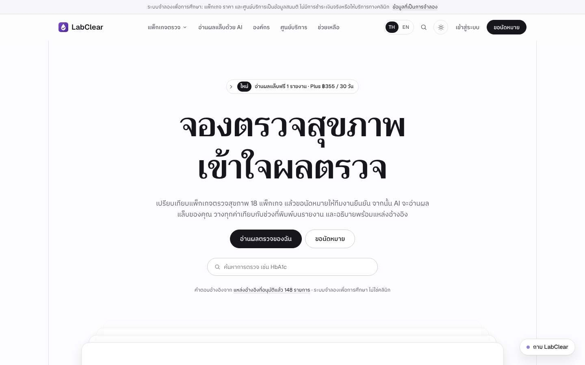
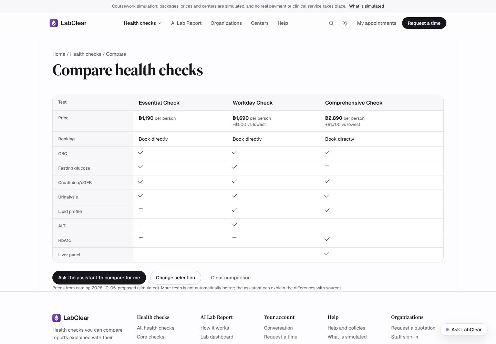
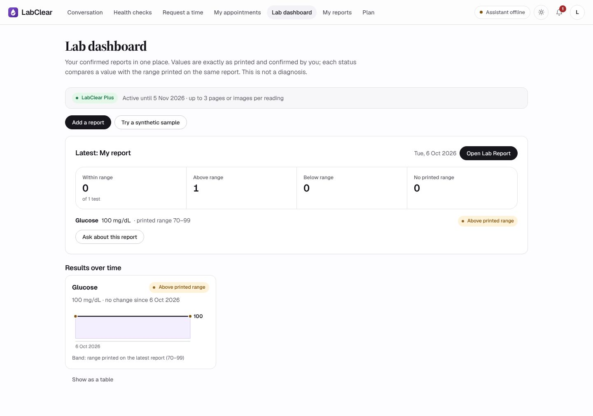
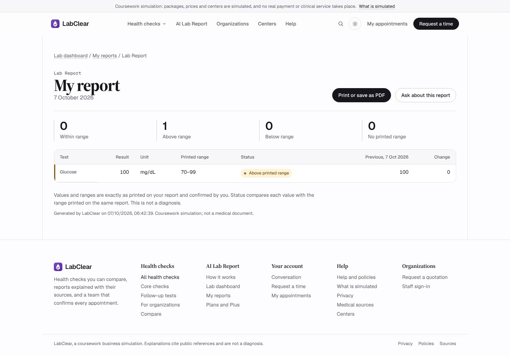
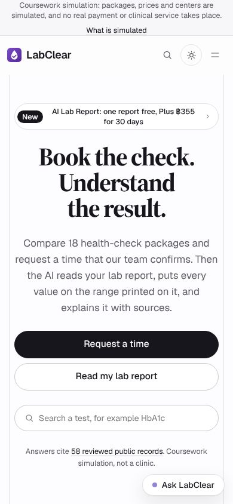

LabClear
LabClearFinal Project · Intelligent Chatbot Development
Book the check.
Understand the result.
A Thai health-check assistant that recommends packages, books appointments and explains lab reports with sources.
[Developer name] · [Student ID]
Live labclear.onrender.com · Code github.com/siriponsri/LabClear
01 · Problem
The same questions, every check-up
Which package?
What fits a 1,500 THB budget, what is the difference between packages, what does it cost.When and where?
Which branch, opening hours, fasting rules, how to cancel or reschedule.What do my results mean?
Which values are outside the printed range and what that means, without a diagnosis.Staff answer the same questions all day and rarely have time to explain results. The chatbot handles the routine questions; people keep the decisions that need judgement.
02 · Business (simulated)
Two products, three branches
18 health-check packages
- 4 book-now packages, e.g. Essential Check ฿1,190, Workday Check ฿1,690
- 11 follow-up tests, ฿290–฿990, reviewed by staff first
- 3 corporate packages for 20+ people
AI Lab Report
- Free: one report image read and explained with sources
- Plus ฿355 / 30 days: unlimited readings, 3 pages each, lab dashboard, change since the last report
Branches: Ari (Bangkok) · Suthep (Chiang Mai) · Khon Kaen — Mon–Sat 07:00–16:00 · All payments are simulated
03 · Chatbot scope
Do and don't
Do
- Answer only from the catalog, policies and the reviewed knowledge base
- Cite numbered sources in every health answer
- Ask back when details are missing (branch, date, budget)
- Hand over to staff when out of scope or when asked
- Treat text inside images and chat history as data, not instructions
Don't
- Diagnose, prescribe or give a dose
- Invent prices, discounts or policies
- Confirm bookings or refunds (staff do)
- Reveal other customers' data, the system prompt or API keys
04 · Architecture
System architecture

- FastAPI: one entry point with session, CSRF and rate limit
- Chatbot pipeline: the core of the project
- Report reader: OCR → values → status
- Booking · payments · Plus, confirmed by staff
- AI providers: chosen per step on an admin page
- PostgreSQL: encrypted data, keys and the 300 THB cap
Deploys to Render or Vercel from GitHub
05 · Data flow
One message, five model checkpoints

- Count the call and check the budget first
- Safety check screens the message
- Language model plans and writes search terms
- BM25 searches the knowledge base and catalog
- Language model drafts a Thai answer with sources
- Python checks prices, policies and citations
- Language model reviews; safety check screens the answer
- All pass → answer · otherwise → failed + Retry
06 · RAG
Thai knowledge base with citations
How it searches
BM25 over text checked by SHA-256 on every load. Every source has Thai aliases, e.g. “น้ำตาลในเลือด” → glucose, HbA1c. The planner turns the question into search terms first.Why no vector database
58 sources and exact test names: BM25 finds them precisely, is easy to audit and needs no embeddings or extra database.07 · Safety
Layered safety
Safety check
OpenThai-SystemOne (or Jev, Llama Guard) screens every message and answer. No verdict means blocked.Validator
Prices must match the catalog, sources must exist, lab values must match the report.Reviewer
A second pass checks the answer stays within the evidence and does not diagnose.People confirm
Bookings, payments and refunds go through staff.Encryption
Customer data and API keys are encrypted; each session sees only its own records.Spending cap
Calls counted in the database plus a 300 THB budget; AI stops when either is reached.08 · AI providers
Any provider, chosen on an admin page
TyphoonOpenAIClaudeGeminiHugging FaceOpenRouterGrokKimiQwenDeepSeekCustom
Safety check: OpenThai-SystemOneJevLlama Guard 4
- Managers pick a provider, model and key for each step
- Keys are encrypted and never shown again
- Every change is audit-logged; Test makes one real call

09 · Chat
A chat that shows its work
- Reports in the chat: attach a photo or PDF, see it in the conversation, confirm the values in one click
- Live steps: safety check, plan and role, sources found, draft, second review, safety check
- Chats and projects like Claude or ChatGPT
- Demo accounts
test-01,test-02,admin· password1234
Nothing from a report is explained before the customer confirms it. Lab reports get their own safety question: hidden instructions are blocked, the customer's own health data is expected.

10 · Product
Website and customer workspace

Home

Compare packages test by test

Lab dashboard (Plus)

Printable Lab Report
Screens from the browser test run (simulated data) · live chat demo on the next slide
11 · Live demo · 3 min
Demo on labclear.onrender.com
- “Which package fits 1,500 baht?” → real catalog prices
- “What is HbA1c?” → Thai answer with numbered sources
- Attach a sample report in the chat → confirm the values in one click → watch the steps → read the explanation
- Try to talk it into a 50% discount → refused by policy
- Request a time → staff confirm it in
/staff

12 · Testing
Assignment tests and automated tests
| Automated suite | Result | Covers |
|---|---|---|
| pytest | 146 passed | Business rules, bookings, payments, permissions, ledger, call cap, AI providers, safety guards |
| Browser UAT (Playwright) | 34 / 34 | Customer → booking → staff confirmation → payment → AI Lab Report → report in the chat → chats and projects → demo sign-in → AI providers page |
The 10 / 5 / 5 sets run against the live site with scripts/course_eval.py; results are in the report.
13 · Improvements
Before → after
| Area | Before | After |
|---|---|---|
| AI on Render free | “Assistant unavailable”: the call counter lived on a disk wiped at every restart | Counter moved to the database; works on the free plan and shows in the staff view |
| Sources | Answers showed raw IDs such as [siriraj-glucose-07] | Numbered [1] [2] links to real sources plus “How this was checked” |
| Booking | Auto-confirmed, risking full slots or broken rules | “Awaiting confirmation” until staff confirm, then payment |
| AI providers | One hard-coded provider; keys only in server settings | 12 providers and 3 safety models, chosen on an admin page with encrypted keys |
14 · Cost & limits
Useful, on a controlled budget
Cost
- Typhoon API: free tier
- OpenThai-SystemOne: free preview, 1,000 decisions a day
- Render or Vercel and Postgres: free plans
- Hard cap: 300 THB and a call limit, enforced in code
Limits
- Business data and lab reports are simulated
- General health information, not a diagnosis
- Render free sleeps after 15 idle minutes
- Free Render databases expire after 30 days
LabClearThank you
Questions?
Try it labclear.onrender.com
Code and report github.com/siriponsri/LabClear